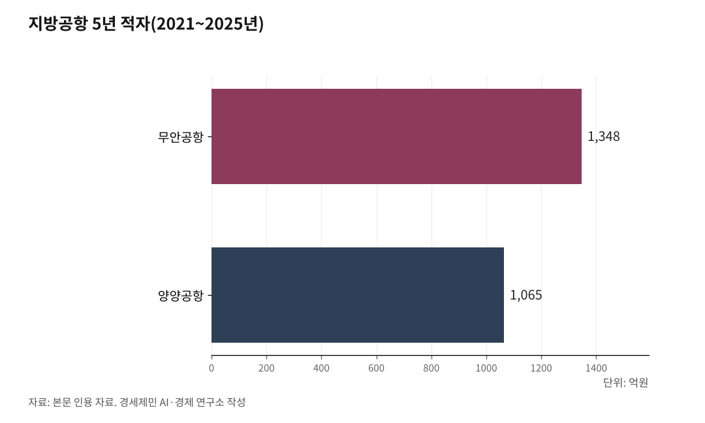

[127년 한국철도⑪] 빅3만 흑자, 11곳은 적자… 짧은 하늘길은 철도가 지운다
적자 공항 11곳인데 새 공항 또 10곳… 수요 예측은 실제의 열 배였다
KTX 들어서자 김포~대구 항공 단항, 서울~울산 수요도 철도로
도심에서 도심으로, 정시에, 적은 탄소로… 단거리는 철도의 몫
단 철도도 옥석… 목포~제주 해저철도 16조8000억, B/C 0.78
인하대 해양AI융합센터 김갑봉 연구교수(물류학)│사람이 먼 길을 갈 때 고를 수단은 둘이다. 하늘길과 땅길. 한국에는 공항이 줄을 선다. 적자 공항이 쌓이는데도 새 공항 계획이 잇따른다. 그런데 그 짧은 하늘길의 상당수는 철도가 대신할 수 있다.

1. 난립하는 공항
한국공항공사가 맡은 공항은 14개다. 돈을 버는 곳은 김포·김해·제주, 이른바 빅3뿐이다. 나머지 11개는 줄곧 적자다. 빅3가 번 돈으로 지방공항 적자를 메우는 교차보조로 버틴다.
적자의 골은 깊다. 무안공항은 2021년부터 2025년까지 5년간 1348억원, 양양공항은 1065억원을 까먹었다. 무안은 2007년, 양양은 2002년 문을 연 뒤로 한 해도 흑자를 낸 적이 없다. 애초에 수요를 잘못 읽었다. 감사원 감사에서 두 공항의 실제 이용객은 당초 수요예측 대비 양양 13%, 무안 9%에 그친 것으로 드러났다. 실제의 열 배 가까운 수요를 적어 놓고 활주로를 깐 셈이다.
그런데도 새 공항은 계속 는다. 적자가 11곳인데, 새로 짓겠다는 공항이 또 10곳 안팎이다. 가덕도신공항과 대구경북통합신공항, 울릉공항이 줄줄이 대기한다. 적자 공항을 흑자 공항이 메우는 구조 위에, 앞으로 적자가 될 공항을 더 얹는 셈이다.

2. 철도가 지운 항공, 도심이 답이다
철도가 들어가면 짧은 하늘길은 지워진다. 2004년 KTX가 열리자 김포~대구 노선 탑승률은 20~30%로 주저앉았고, 2007년 10월 대한항공과 아시아나항공이 잇달아 그 노선을 접었다. 서울~울산의 항공 수요도 2010년 KTX가 울산에 닿으면서 크게 줄었다. 빠른 열차가 닿는 거리에서, 사람들은 비행기를 버리고 기차를 골랐다. 열차가 두 시간 안팎에 잇는 거리라면, 짧은 국내선은 설 자리를 잃는다.
까닭은 분명하다. 공항은 도시 밖에 있다. 가려면 한참 나가고, 일찍 도착해 보안검색을 거치고, 안개와 눈에 결항한다. 비행 자체는 한 시간이라도, 공항을 오가고 검색을 기다리는 시간까지 더하면 철도가 더 빠를 때가 많다.
철도는 도심에서 도심으로 곧장 닿고, 날씨에 덜 흔들리며, 정시에 가깝다. 같은 거리를 비행기보다 적은 탄소로 나른다. 두세 시간 거리의 국내선이라면, 답은 철도다.
3. 그래도 옥석은 가린다
그렇다고 철도가 만능은 아니다. 무리한 철도도 공항만큼 위험하다. 제주에 폭설이 내려 공항이 묶일 때마다, 바다 밑으로 고속철도를 놓자는 목소리가 고개를 든다. 목포에서 제주까지 167km를 잇자는 구상이다. 그 가운데 73km가 세계에서 가장 긴 해저터널이고, 사업비는 16조8000억원에 이른다. 2011년 정부 타당성조사에서 비용편익비(B/C)는 0.78로 나왔다. 1을 밑돌면 편익이 비용에 못 미친다는 뜻이다.
그런데도 논의는 폭설 때마다, 지역 정치권이 표를 셈할 때마다 되살아났다. 2026년 3월 이재명 대통령도 제주 타운홀에서 주민 찬반을 확인한 뒤 "하지 말자는 의견이 훨씬 많다"며 반대 뜻을 밝혔다. 바다 건너 167km는 철도의 몫이 아니다.
4. 밀도가 수요를 만든다
공급이 수요를 만든다는 말은 절반만 맞다. 철도가 그렇다. KTX가 깔리자 항공 수요가 철도로 옮겨 왔고, 역마다 역세권이 서고 일대가 일일생활권으로 묶였다. 없던 통행이 새로 생겼다. 그래서 지자체마다 우리 지역에도 깔아 달라는 요구가 빗발친다. 제5차 국가철도망 구축계획에 건의된 사업만 약 650조원(2026년 4월 기준)으로, 예산의 열여섯 배다.
그러나 깔면 다 느는 것은 아니다. 유발수요는 바탕이 있어야 생긴다. 인구와 산업이 두껍게 깔린 축에 철도를 놓으면 잠재수요가 깨어나 이용이 자라지만, 바탕이 얇은 곳에 놓으면 빈 길이 된다. 무안과 양양이 그 증거다. 공항을 지어도 사람이 오지 않았다. 실제 이용객은 예측의 십분의 일이었다. 공급이 수요를 부르지 못한 것이다.
그러니 잣대는 현재의 수요가 아니라 밀도다. 유발할 잠재수요가 있는 곳인지 먼저 재야 한다. 목포~제주 해저철도가 B/C 0.78에 걸린 것도 바다 건너 얇은 수요가 십수조원을 되받지 못해서다. 밀도가 받치는 축에는 과감히 깔아 수요를 키우고, 밀도가 없는 곳엔 공항이든 철도든 접는다. 그것이 난립을 막는 단 하나의 잣대다.
※ 이 기사는 AI 프로그램 클로드를 활용해 작성했습니다.
참고문헌
· 인천투데이, "[심층] 한국공항공사, '제주항공 참사'에도 실적 개선···통합 명분 상실", 2026. https://www.incheontoday.com/news/articleView.html?idxno=318923
· 한국경제, "비행기 뜨자 불 꺼졌다…3000억 들인 '유령 공항'의 민낯", 2026.05.28. https://www.hankyung.com/article/2026052841827
· 머니투데이, "무안 -253억, 양양은 '유령공항'…11곳 적자인데 '10곳 더 짓자'", 2024.12.30. https://news.mt.co.kr/mtview.php?no=2024123022404864267
· 여행신문, "[지방은 지금] KTX에 밀린 김포-대구 국내선". https://www.traveltimes.co.kr/news/articleView.html?idxno=59102
· 인천투데이, "[목포-제주 고속철도③] 세계 최장 73km 해저터널, 수심 135m·화산암반 극복 가능한가". https://www.incheontoday.com/news/articleView.html?idxno=309702
· 인천투데이, "[특집 5차 철도망-번외] 목포-제주 해저터널 고속철도, 꿈과 현실". https://www.incheontoday.com/news/articleView.html?idxno=305736
· 국토교통부, "호남 제주 해저고속철도 정책Q&A". https://www.molit.go.kr/USR/policyTarget/dtl.jsp?idx=249
· 서울신문, "제주서 12번째 타운홀 미팅 이 대통령… '해저터널은 반대, 제2공항은 도민 판단'", 2026.03.30. https://www.seoul.co.kr/news/society/2026/03/30/20260330500266
#한국철도127년 #공항대신철도 #지방공항난립 #교차보조 #목포제주해저철도 #KTX #항공수요 #탄소중립 #BC분석 #수요맞춤